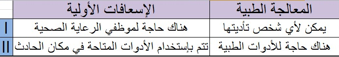

|
1
| لماذا على السائقين معرفة الإسعافات الأولية؟
|
A- |
للتمكن من تقليل نسبة حوادث المرور | | B- |
إكتساب مهارة موظفي الرعاية الصحية | | C- |
للقيام بالعلاجات التي تعالج المرضى | | D- |
ليكون قادرً على القيام بالتدخلات التي تسمح بإنقاذ الحياة في مشهد الحادث |
|
|
2
| مالهدف من الإسعافات الأولية؟
|
A- |
مداوة المرضى | | B- |
تفادي حوادث المرور | | C- |
توفير الدعم الأساسي للحياة | | D- |
الحماية من الأمراض المعدية |
|
|
3
| ممايلي ليس من أهداف الإسعافات الأولية؟
|
A- |
تفادي الدخول في الصدمة | | B- |
تفادي الحوادث | | C- |
الرغبة في الحصول على المساعدة الفورية | | D- |
وقف النزيف |
|
|
4
| ماهوالاسم الذي يطلق على الشخص الذي يتم تدريبه لمساعدة المصاب في مكان الحادث بهدف إنقاذ حياته
دون أي إمدادات طبية؟
|
A- |
السائق | | B- |
المقاول | | C- |
شرطي المرور | | D- |
مقدم الإسعافات الأولية |
|
|
5
| في حادث سير أين ينبغي أن تبدأ الإسعافات الأولية؟
|
A- |
في المستشفى | | B- |
في مكان الحادث | | C- |
في سيارة الإسعاف | | D- |
في مركز الرعاية الصحية |
|
|
6
| أي ممايلي خاطىء حول تطبيقات الإسعافات الأولية؟
|
A- |
استعمالها مع الأدوات المتاحة | | B- |
هي عمل لإنقاذ الحياة | | C- |
تتم من طرف الناس الذي هم في مكان الحادث في تلك اللحظة | | D- |
إنتظار الطبيب أو موظفي الرعاية الصحية للتدخل |
|
|
7
| أقرأ الجدول التالي و أختر الإجابة الصحيحة؟

|
A- |
I صح II خاطئ | | B- |
I خاطئ II صح | | C- |
كلاهما صحيح | | D- |
كلاهما خاطئ |
|
|
8
| أي ممايلي ليست واحدة من القواعد الأساسية للإسعافات الأولية؟
|
A- |
يجب على المسعف تأمين نفسه أولاً | | B- |
يجب على المسعف أن يتجنب التطبيقات التي لايكون فيها متأكد منها | | C- |
لا ينبغي إجراء أي إسعافات حتى تصل المعونة الطبية | | D- |
ينبغي أن يكون التدخل لإسعاف الضحايا سريعاً ولكن هادىءً |
|
|
9
| أي ممايلي هو واحد من أكبر أسباب الوفيات أو الإعاقة الدائمة في الحوادث؟
|
A- |
إزالة خطر تكرار الحادث | | B- |
تطبيقات خاطئة وغير مناسبة للإسعافات الأولية | | C- |
تجنب التدخلات التي فيها مخاطر على الحياة | | D- |
الأشخاص الذين يتم تدريبهم على الإسعافات الاولية |
|
|
10
| I - تأمين حياته أولاً
II - الهدوء و الثقة بالنفس
III - توفر معرفة أساسية حول جسم الإنسان
أي مماسبق هي الصفة التي يجب أن يمتلكها المُسعف؟
|
A- |
I | | B- |
I - II | | C- |
II - III | | D- |
I - II - III |
|
|
11
| أي ممايلي هو أحد الأهداف ذات الأولوية للإسعافات الأولية؟
|
A- |
الحد من الحوادث في حركة المرور | | B- |
إبعاد الناس عن العادات السيئة | | C- |
تفادي أن تزداد حالة المصاب سوءً | | D- |
التعامل مع الحياة الخاصة لمن يشارك في حركة المرور |
|
|
12
| إنه لواجب إنساني الإتصال بخدمة الطوارئ 112
في الحالات الطارئة وإعطاء المعلومات اللازمة
بشكل صحيح ووفقاً لهذا أي ممايلي صحيح
فيمايتعلق بالأشياء التي يجب الإنتباه لها
عند الإتصال بـ 112؟
|
A- |
تفادي وصف مسرح الحادث | | B- |
تفادي التصريح بهوية ورقم هاتف المتصل | | C- |
البقاء هادىءً أو الطلب من شخص هادئ الإتصال | | D- |
إذا تم القيام بأي إسعافات أولية إخفاءها عن الموظفين الصحيين |
|
|
13
| أي ممايلي هو الأكثر أهمية عند إنقاذ المصاب من السيارة؟
|
A- |
أن تكون سريعاً وم متسرعاً | | B- |
محاولة عدم إلحاق الضرر في السيارة | | C- |
محاولة عدم إيذاء الشخص المصاب أكثر | | D- |
نقل الناس بعيدً عن مكان الحادث |
|
|
14
| أي ممايلي يجب أن لايتم من قبل المسعف؟
|
A- |
التعرف على المصاب | | B- |
إنقاذ المصاب من السيارة | | C- |
الإبلاغ عن الحادث للجهات المعنية | | D- |
توفير السلامة لنفسه وللمصاب |
|
|
15
| مالذي ينبغي أن نعتبره تطبيق أساسي لعملية توفير بيئة آمنة عن طريق تحديد المخاطر المحتملة في مكان الحادث؟
|
A- |
الحماية | | B- |
الإبلاغ | | C- |
الإنقاذ | | D- |
التدخل |
|
|
16
| مالذي يجب على المسعف توخي الحذر بشأنه قبل إنقاذ الناس من الحادث؟
|
A- |
النظرماإذا كان هناك احتمال لإحتراق السيارات أو سقوطها | | B- |
الملابس الذي يرتديها الجرحى | | C- |
جنس الجرحى | | D- |
نموذج السيارة |
|
|
17
| I - التعرف على عدد الجرحى وظروفهم
II - إزالة إمكانية تكرار الحادث
أي ممايلي هو الهدف من المعلومات المعطاة؟
|
A- |
تقييم موقع الحادث | | B- |
الحصول على مقومات العاملين | | C- |
التعامل مع الحياة الشخصية للجرحى | | D- |
تحديد نوع ونموذج السيارة المتورطة في الحادث |
|
|
18
| إذاكانت السيارة المحطمة معرضة لخطر الإنقلاب والسيارة تتراجع للخلف متى يجب إخراج الجرحى منها؟
|
A- |
على الفور | | B- |
بعد أن تصبح السيارة مثبتة | | C- |
بعد تحديد نوع ونموذج السيارة | | D- |
بعد دفع السيارة ببطء |
|
|
19
| I - سحب الفرامل اليدوية
II - إيقاف تشغيل المحرك
III - إذا كانت السيارة غاز إغلاق صمام الإسطوانة
مما سبق يُتخذ كإجراء أمني في سيارة محطمة؟
|
A- |
I | | B- |
I - II | | C- |
II - III | | D- |
I - II - III |
|
|
20
| أي ممايلي هو واحد من التطبيقات الواجب القيام بها بعد وقوع حادث لتهيئة بيئة آمنة؟
|
A- |
إبعاد الناس المزعجة السلبية التي تجعل من الصعب مساعدة المصابين | | B- |
منع السائقين الآخرين من رؤية الحادث | | C- |
إذا كانت السيارة تعمل بالغاز عدم إغلاق صمام الإسطوانة | | D- |
ترك المحرك يشتغل في السيارة المحطمة |
|
|
21
| كيف يجب أن تكون الرسالة في الإبلاغ عن الحاجة للمساعدة الطبية؟
|
A- |
سرية | | B- |
مشفرة | | C- |
مفصلة ومفهومة | | D- |
موجزة ومفهومة |
|
|
22
| أي ممايلي يتطلب التدخل الفوري؟
|
A- |
الموت | | B- |
النزيف الشديد | | C- |
حرق الدرجة الأولى | | D- |
إلتواء الكاحل |
|
|
23
| في حالة حدوث حادث ما يوجد فيه العديد من الجرحى يتم تقييم حالة المصابين وتحديد الأولويات وفقاًً لذلك
أي الإصابات التالية يجب أن يكون آخر واحدة للتدخل؟
|
A- |
جرح معدة مفتوح | | B- |
شخص فاقد الوعي | | C- |
صعوبة في التنفس | | D- |
خلع في الكاحل |
|
|
24
| في بلدنا لأي غرض يستخدم الرقم 112؟
|
A- |
إطفاء وإنقاذ | | B- |
إسعاف | | C- |
شرطة | | D- |
درك |
|
|
25
| أي ممايلي هو الترتيب الصحيح لوحدات البناء في جسمنا من الصغيرة إلى الكبيرة؟
|
A- |
الخلية - العضو - الأنسجة - النظام | | B- |
النظام - الأنسجة - الخلية - العضو | | C- |
الجهاز - العضو - الأنسجة - الخلية | | D- |
النظام - الأنسجة - العضو - الخلية |
|
|
26
| ماذا تسمى البنية عندما تتحد الأعضاء مع بعضها لأداء وظيفة معينة في جسمنا؟
|
A- |
نسيج | | B- |
الخلية | | C- |
الجسم | | D- |
النظام |
|
|
27
| في الجسم ماهي الأنظمة التي تدعو للقلق عليها عند وجود كسور عند الجرحى؟
|
A- |
نظام الإطراح | | B- |
نظام الدورة الدموية | | C- |
النظام الحركي | | D- |
نظام الهضم |
|
|
28
| أي ممايلي لديه مفاصل ليفية؟
|
A- |
الكوع | | B- |
العمود الفقري | | C- |
الجمجمة | | D- |
المعصم |
|
|
29
| أي ممايلي يعمل في الجسم بأكمله؟
|
A- |
نظام الهضم | | B- |
نظام الدورة الدموية | | C- |
نظام التبول والإطراح | | D- |
نظام التنفس |
|
|
30
| ماهو اسم ضغط القلب الذي يدق على جدار الشريان والذي يمكننا الشعور به بأطراف أصابعنا؟
|
A- |
النبض | | B- |
التنفس | | C- |
درجة حرارة الجسم | | D- |
السكر في الدم |
|
|
31
| يقوم المسعف بضرب طفيف على كتف المصاب ويسأل هل أنت بخير ماهي الظروف التي يفحصها مقدم المسعف بهذا السلوك؟
|
A- |
عسر الهضم | | B- |
الوعي | | C- |
حركة الصدر | | D- |
التنفس |
|
|
32
| أي ممايلي لم يتم تضمينه في مبادئ الإسعافات الأولية؟
|
A- |
تحديد الكسور | | B- |
تقييم الدورة الدموية | | C- |
تقييم التنفس | | D- |
تقييم فتحات المجاري الهوائية |
|
|
33
| ممايلي لاينتمي للإجراءات ABC ؟
|
A- |
تقييم فتحات المجاري الهوائية التنفسية | | B- |
تقييم الدورة الدموية | | C- |
تقييم التنفس | | D- |
تقييم الهضم |
|
|
34
| ماذا يعني انظر عند تنفيذ انظر - اسمع - اشعر؟
|
A- |
النظر لحركة صدر المصاب | | B- |
النظر مكان الحادث لمعرفة هل هناك مواد قابلة للإشتعال | | C- |
النظر للمصابين لمعرفة هل هناك كسور لديهم | | D- |
النظر والبحث لمعرفة عدد المصابين هناك |
|
|
35
| ماذا يعني اسمع في طريقة انظر - اسمع - اشعر؟
|
A- |
الإستماع للأشخاص الذين يظهرون إشارات مرور | | B- |
الإستماع لتنفس الشخص المصاب | | C- |
الإستماع لشكاوي الشخص المصاب | | D- |
الإستماع إذا كان هناك صافرات إنذار |
|
|
36
| I - يضع يد واحدة على جبهة المصاب
II - يضع أصبعين من يده الأخرى على عظم الفك
III - يدفع الرأس للخلف برفع الفك للأعلى
ماهو اسم هذه الوضعية لفتح مجرى الهواء للمصاب؟
|
A- |
وضعية الصدمة | | B- |
وضعية نصف الجلوس | | C- |
وضعية الرأس للخلف الذقن للأعلى | | D- |
وضعية نصف انبطاح - نصف جلوس |
|
|
37
| أي ممايلي هو مرحلة من مراحل طريقة انظر - اسمع - اشعر عندما تُقرب قطعة زجاج أو مرآة من فم الشخص المصاب؟
|
A- |
اسمع | | B- |
انظر | | C- |
اشعر | | D- |
اسمع و اشعر |
|
|
38
| أي ممايلي ليست واحدة من التطبيقات على المصاب عند القيام بطريقة انظر - اسمع - اشعر؟
|
A- |
مراقبة لون البشرة | | B- |
الشعور بالتنفس | | C- |
الإستماع للتنفس | | D- |
مراقبة حركة التنفس |
|
|
39
| في أي حالة من الخطر لا يتم تطبيق طريقة الرأس للخلف الذقن للأعلى؟
|
A- |
الأشخاص الذين يعانون من ضيق التنفس | | B- |
في الحالات التي يتدلى اللسان للخلف ويسد مجرى الهواء | | C- |
في تطبيقات التنفس الإصطناعي | | D- |
التمزق عند فقرة العنق |
|
|
40
| I- يحني المُسعف رأسه على صدر المصاب
II - يقترب من فم المصاب
III- خلال 10 ثواني يقييم التنفس
مااسم الإجراء الذي يقوم به؟
|
A- |
طريقة انظر - اسمع - اشعر | | B- |
مناورة هيمليك | | C- |
تطبيق عُصبة | | D- |
وضعية الصدمة |
|
|
41
| وجود علامات حيوية عند تقييم حالة المصاب مهم بالنسبة للتدخلات التي يتوجب علينا القيام بها ممايلي ليس من هذه العلامات ؟
|
A- |
المصاب واعي | | B- |
الدورة الدموية سليمة | | C- |
التنفس موجود | | D- |
نزيف اللثة |
|
|
42
| أي ممايلي من العلامات التي تظهر على المصاب في حال إنسداد مجرى الهواء لديه؟
|
A- |
زيادة مستوى الأوكسجين في دمه | | B- |
عدم قدرة وصول الأوكسجين للرئتين | | C- |
إنخفاض نسبة ثاني أوكسيد الكربون في الدم | | D- |
وصول الأوكسجين للأنسجة |
|
|
43
| ممايلي من علامات حدوث إختناق بالأنسجة بسبب إنسداد مجرى الهواء؟
|
A- |
إزرقاق الأصابع والشفتين | | B- |
إحمرار في الوجه وزيادة درجة حرارة الجسم | | C- |
يكون المصاب قلق ونشيط | | D- |
انقباض حدقات العين |
|
|
44
| في أي حالة من الحالات التالية يتم إجراء تدليك لقلب المصاب؟
|
A- |
عندما يتوقف قلبه | | B- |
عندما يفقد وعيه | | C- |
عندما يضيق تنفسه | | D- |
بطء نبضات قلبه |
|
|
45
| في حال توقف القلب عن العمل يتوقف وصول الأوكسجين للأنسجة من الأعضاء التالية يبدأ بالتلف أولاً؟
|
A- |
المعدة | | B- |
المخ | | C- |
الكبد | | D- |
الأمعاء |
|
|
46
| عند البالغين وعند إجراء دعم حياة أساسي كم يجب أن يكون نزول الصدر عند الضغط عليه؟
|
A- |
واحد سينتمتر | | B- |
اثنان سينتمتر | | C- |
خمسة سينتمتر | | D- |
ستة سينتمتر |
|
|
47
| إلى متى يجب الإستمرار بالتنفس الإصطناعي عند مصاب بدأ قلبه ينبض ولكن لايوجد لديه تنفس؟
|
A- |
عشرة دقائق | | B- |
خمسة عشر دقيقة | | C- |
حتى ينبض قلبه بسرعة أكبر | | D- |
حتى يبدأ المصاب بالتنفس |
|
|
48
| I - إستلقاء المصاب على أرض صلبة
II - تحديد عظم القص من الصدر
III - الضغط بشكل يعادل نصف إرتفاع الصدر
أي مماسبق هو من خطوات تنفيذ دعم الحياة الأساسي؟
|
A- |
I | | B- |
I - II | | C- |
II - III | | D- |
I - II - III |
|
|
49
| ماذا تسمى الطريقة الموضحة في الصورة المرفقة؟
.jpg)
|
A- |
مناورة هيمليك | | B- |
مناورة رينتك | | C- |
طريقة رجل الإطفاء | | D- |
الطريقة العسكرية |
|
|
50
| مالغرض من المناورة التي تظهر في الصورة؟
.jpg)
|
A- |
توقف النزيف | | B- |
تقييم الوعي | | C- |
تثبيت الكسور | | D- |
فتح مجرى الهواء في حال حدوث إنسداد بالأجسام الغريبة |
|